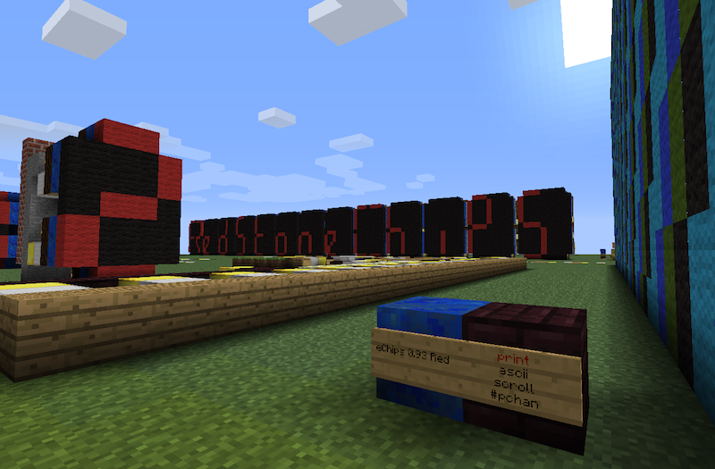

RedstoneChips is a bukkit plugin that makes it possible to build custom integrated cicuits on your minecraft server.
- Build chips with any number of input and output pins, from compact 2 block chips up to whatever you can imagine.
- There are currently 50 different chip types to choose from and a number of 3rd party chip libraries.
- Most chip types can work with a wide, or infinte range of input/output configurations. Sign text arguments allow further changes to chip behavior.
- Chips can communicate through redstone, or directly by touching each other. Some chip types can also communicate over wireless channels.
- Chips can be built in almost any imaginable structure allowing very compact circuits.
- The plugin has many chat commands that help getting around or debugging a large project.
includes:
- RedstoneChips-0.93 - The core plugin (required).
- BasicCircuits-0.93 - The basic circuit library containing most chip types you might need (required).
- SensorLibrary-0.31 - A circuit library for various sensor chips (optional).
For help on how to use the plugin check the user guide. For a full documentation of all available chip types in BasicCircuits and SensorLibrary check the circuitdocs.
Installation
- Install the latest craftbukkit recommended release. The current RedstoneChips version was tested on craftbukkit 1.0.1-R1 and Minecraft 1.0.0.
- Download the zip file above and any optional 3rd party circuit libraries (see below).
- Unzip the zip file and copy the jar files into your craftbukkit plugins folder.
You can change the block types used to construct a circuit and other settings by editing preferences.yml or preferably, by using the /rcprefs command (see guide for commands info).
3rd party chip libraries
- LightControl by @Mordenkainen - A RedstoneChips library for controlling light sources.
- MobSensor by @Richard Robertson - Specific mob detection circuits.
- MessageCircuit by @Richard Robertson - a circuit that sends a player a message when any of its inputs receive power.
Contribute
- If you have feature suggestions, bug reports and any other issues click here or send an email to the address in the sidebar.
- Share your circuits with the world. Schematics, sram files and videos are welcome.
- Help making the documentation better. To help improve circuitdocs you can send a pull request to the gh-pages branch with changes or just send suggestions by mail. Any additions to the wiki will be very appreciated.
- Help development. Pull requests will be happily tested and hopefully merged. Check the github page. If you're
interested in maintaining and developing RedstoneChips on a regular basis do let me know. It's a lot of work and I could use some help.
- Donate!
Source code
RedstoneChips github pages
BasicCircuits github pages
SensorLibrary github pages